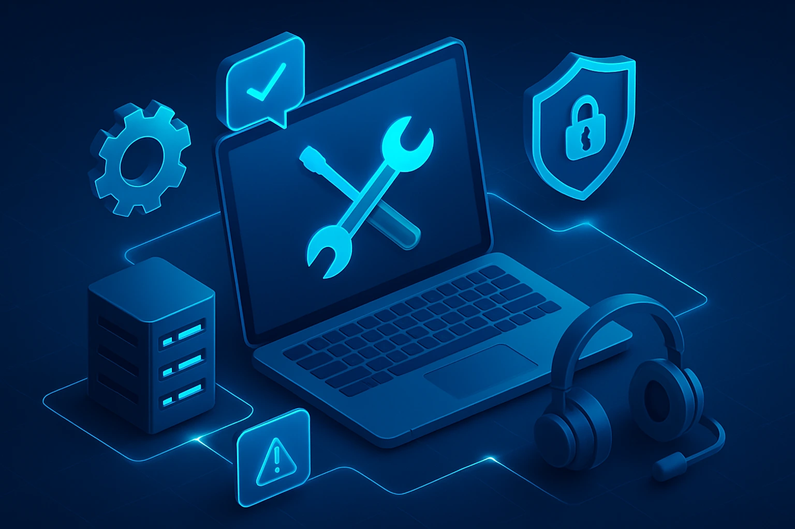

Technology Services solution.
Technology is strengthening the future of work. We being a technology company, we have constantly extended the technological advantage to our clients. We have been persistently adaptive to accommodate the changes in the workforce, customer needs and business models and thus enabling us to broaden the opportunity of technological advantage to our clients. From application integration to web services, our innovative services consistently exceed expectations across industries. Our services are vast and include, Custom Application Development, Consulting, Implementation, Solution Deployment and Maintenance & Management. We work relentlessly to earn total Trust. We measure our business success with the trust we earn and accumulate with our clients.
Software Development

The computations are small pieces of a great big puzzle of a problem. In this way, GVS can solve more pieces of the puzzle faster and come up with solutions in a shorter time span than could otherwise be possible. We see development as a process of approaching the world with ideas, code and syntax. We develop reliable and scalable applications.
GVS is a software development company with deep industry experience and comprehensive expertise in building custom software. Our vast experience and exhaustive expertise helps us to build applications that help you to remain organized in the competitive business era. Our applications are specifically designed to meet your business needs. The applications that we build are scalable and are planned to ensure increased productivity and improved business processes. Our team of techno-functional consultants work closely with your process owners to design high-fidelity wireframes and prototypes considering 'your goals', these wireframes incorporate a high level of detail that closely matches the flow of information in the proposed solution minimizing the gap between the requirements and deliverables ensuring that the final delivery meets your business objectives.
- Web Applications.
- PC Based Software Applications.
- Mode lBased Software Applications.
- Embedded Systems Applications.
Consulting Services
GVS cater smart techniques to handle challenging consulting services for your software development needs. GVS deploys proprietary technologies specifically developed to optimise the requirements gathering process. Right from analyzing your high level business requirements to post- production maintenance and support, we have consistently demonstrated the ability to deliver high-quality software solutions to your business needs.
Business Requirement Consulting
Technology is often misapplied without understanding and underlying the dynamics of business, customer needs, and organization goals. We have introduced a unique perspective and inventive business consulting solutions that leverage and supplement the best of our client`s processes and systems. We utilize a proven methodology to effectively analyze your business requirements, workflows and processes to identify appropriate technology solutions for your organization.
Our goal is to understand and derive solutions to your business needs. We partner with our clients to understand their strategic Business needs. Our Industry and Technology Certified experts add value to your business is extended through the wealth of experience. Our dedicated team provide end-to-end technology solutions remain focused on the business needs within your company. GVS's Strategic approach is the key to success of your implementations. We help our clients meet the business consulting needs.
Upon completion, we provide you with a comprehensive document and an overview of our findings and recommendations to help you understand how the proposed solution will help you to meet your business needs.
Maintenance and Support

GVS provides Software maintenance and support services for the foreseeable future. You want a team that you know will be around to handle these needs. We have a strong team of system administrators, systems to preserve knowledge over multiples of years. We do this so you can focus on running your business and not on running your systems.
In software maintenance, the word maintenance involves activities on the developed and delivered software in order to correct errors, to improve performance or other attributes, or to acclimatize the product to a modified environment.
GVS has a vast experience in providing proficient software maintenance support services. We can efficiently provide enhancements; modification and product upgrade support services for your software.
GVS also provides offshore software maintenance services for organizations needing software maintenance and support. Software maintenance is an integral part of software development life cycle. We provide end-to-end outsourcing software maintenance services ensuring that issues related to software maintenance are resolved in a timely and efficient manner with minimum timeframe for critical applications.
GVS is well equipped in developing, maintaining and fixing bugs in software maintenance. With our vast expertise we provide our customers a dedicated team who perform the task at hand amid well defined procedures and methodologies.
Software maintenance services include:
- Correcting errors (Bug Fixes) Our team analyzes and provides quality support and maintenance in an efficient and timely manner.
- Product / Service Stabilization This service includes maintenance for enhancements due to change in hardware and software system or change in the working environment of the product.
- Integration with New Application Our profession team is capable of seamless services and delivers scalable solutions that are in sync with the fast changing technologies.
Technologies
There has always been an unending question in the world of business solutions; Ready Product Vs. Custom Build.
Which is better, custom build or to configure, customize and implement existing, commercial off the shelf software (COTS) product? The answer is not that simple, it's a decision best made after in-depth analysis of internal requirements.
On the contrary, while it may seem simple, determining the right solutions approach is a complex process. Your stake owners first need to understand specific business processes and take into account strategic goals, external partners, and required systems support—all of which deserve thorough investigation. They also need to evaluate common business factors—such as project and business validation—before choosing the right solution approach.
Before concluding to a technology decisions, it might be important to take a pause and be focused. It is highly recommended to ensure a thorough understanding of the current business requirements and mapping the solutions with cost, ROI and the expected results.
At GVS, we have an extensive team of technology experts - those who are technology certified and are skilled in various programming languages. When it comes to recommendations or solutions we are always unbiased and constantly endeavour to guide our clients to the right directions.
Languages and Tools
There are various programming languages, and Tools that can be used to custom build a solution for your business. When helping you make such decisions and to ensure that our solutions are in place for the long haul, we often look at important factors such as the existing applications that are being used by the organization and the familiarity of the current developers or IT team to a specific technology.
Over course of time, GVS has built an extensive team of technology experts across various programming languages, and Tools each of them surpassing in their own area of expertise.
- C
- C++
- Embedded C
- JAVA
- .NET
- QT Framework
- MAT Lab
- Lab View